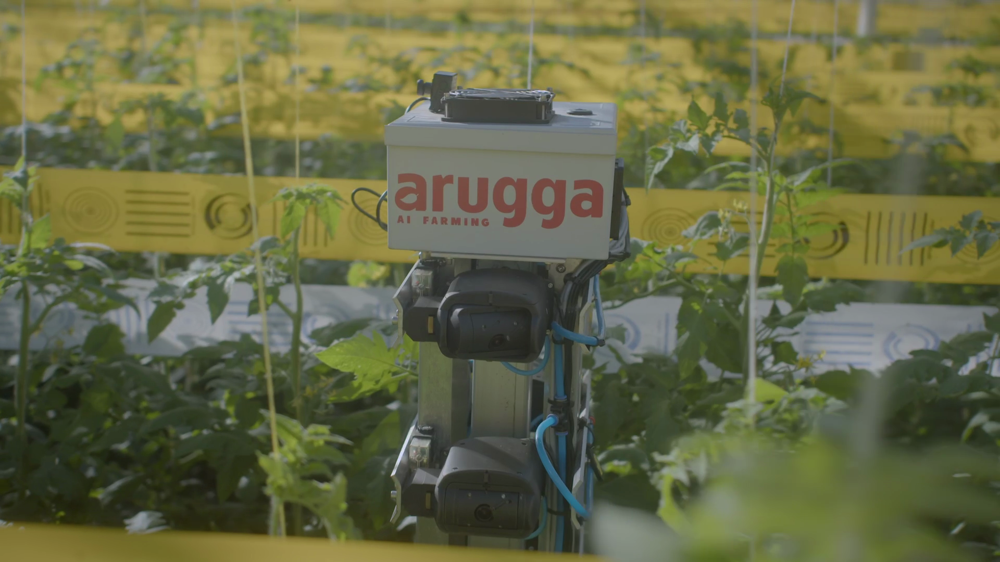
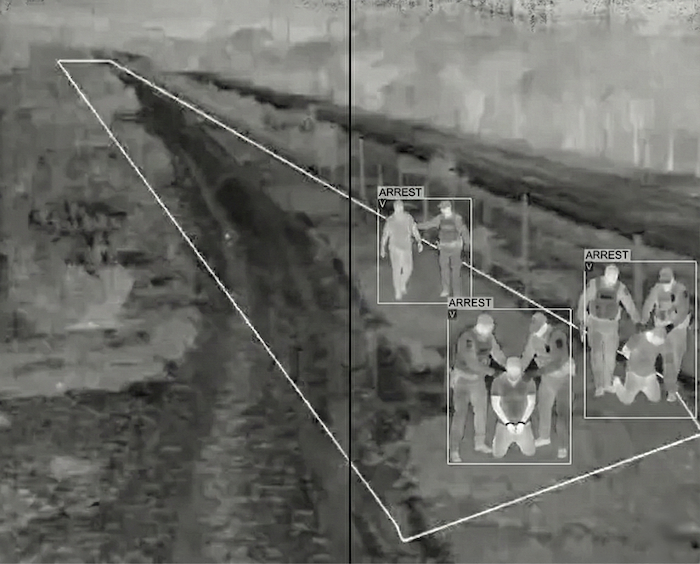
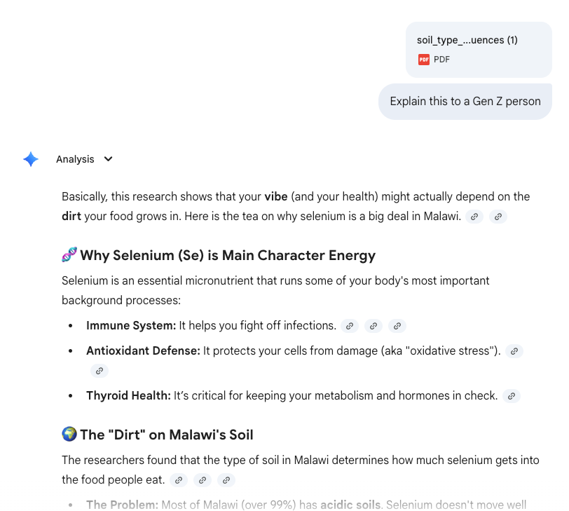
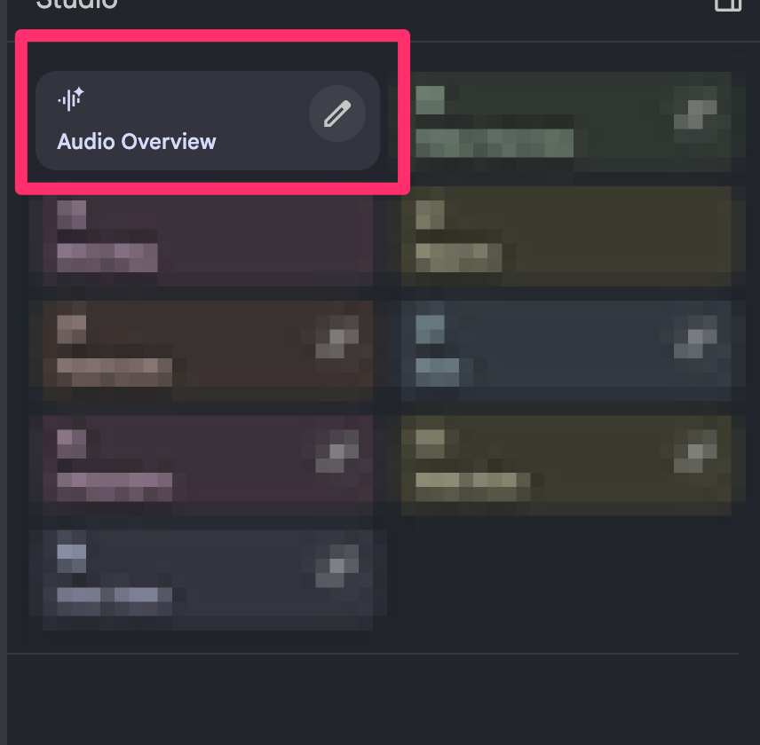

AI for Data Analysis
San Francisco Bay Bird Observatory (SFBBO)
Welcome
Today’s goal: become confident using AI to accelerate data analysis.
What we’ll do in the workshop:
Explore the foundations of how AI works.
Learn to integrate Gemini into your daily workflows.
Review best practices for getting the best AI outputs.
Practice with real-world scenarios using fictional SFBBO survey data.
Quick Poll: What are your feelings towards AI?
Raise your hand if you fall in the following group:
AI Enthusiast: Excited to use AI tools daily!
AI Curious: Interested but unsure where to start!
AI Skeptic: Unsure about AI’s role in society.
Share a moment where AI surprised you!
Turn to a neighbor and share (2 min):
- A time AI helped you in unexpected ways
- Or a time AI let you down
Things you can do with AI today
Transcribe meeting notes automatically.
Make you look younger in photos.
Write code for data analysis or building websites.
Build detailed itineraries.
Accelerate Writing.
Manage Your Schedule.
Create misinformation.
Advise best time to buy consumer goods.
AI in the real world
Costa Group deploys computer vision-powered pollinators instead of bumblebees in Australian greenhouses.


AI in the real world
Catch poachers in the dark


How AI is Created
Step 1: Collect massive amounts of text
Billions of pages from the internet, books, research papers, code repositories
Remove spam, personal data, and low-quality text
Curate a balanced dataset covering many topics
Convert words to vectors
Imagine you’re playing a video game where you have to create a character. You have sliders for different traits:
- Strength: 10
- Magic: 2
- Speed: 8
That list of numbers (10, 2, 8) is a vector.
For the word “Apple,” the sliders might look like:
- Is it Food?: 0.98 (Very high)
- Is it Tech?: 0.85 (Pretty high)
- Is it Red?: 0.90 (Very high)
- Is it a Planet?: 0.01 (Almost zero)
The vector for “Apple” is just a long list of these numbers: [0.98, 0.85, 0.90, 0.01…].
Wait, What?
If you take the vector for King subtract the vector for Man and add the vector for Woman the resulting numbers will lead you almost perfectly to the vector for Queen.
King - Man + Woman = Queen
The computer doesn’t “know” what a Queen is; it just knows that the mathematical distance between those concepts is identical.
Fine-tuning
Imagine I give you a sentence: “The astronaut climbed into the _______.”
You’d probably guess “rocket” or “spaceship.” You wouldn’t guess “sandwich.”
The AI does this trillions of times. During training, it’s shown a sentence with the last word hidden. It makes a random guess.
Human experts label examples of good vs. bad responses
Why modern AI feels so human?
If you said, “The bank was closed because the river overflowed,” an older AI might think you were talking about a place where you keep your money.
The Attention mechanism acts like a spotlight. When the modern AI sees the word “bank,” its spotlight instantly swings over to the word “river.”
Context is King: The Attention mechanism allows the AI to understand that one word can have five different meanings depending on its “neighbors.”
Why doesn’t the AI give the same answer every time?
Because of a setting called Temperature.
- Low Temperature (0.1 - 0.3): The AI always picks the #1 most likely word. It’s very logical but boring.
- High Temperature (0.7 - 1.0): The AI is allowed to pick the 3rd or 10th most likely word. This is where “creativity” comes from.
Extreme Improv aka Hallucinations
On rare/obscure topics (e.g., a niche local law, a new species), the model may not have enough signal to be sure.
But it still has to predict the next token—so it keeps going.
Ask something impossible (“Why did George Washington invent the internet?”) and it may confidently improvise.
The danger isn’t just being wrong—it’s sounding certain.
Tokens
AI doesn’t see words. It sees tokens.
A Token is usually a word piece. For example, unhappiness might be split into un, happi, and ness— 3 tokens.
Asking an AI something and getting a response consumes tokens.
Think of tokens as Lego blocks of language. If you give a child a Lego set, they don’t see a Castle; they see 400 individual plastic bricks.
Context Length
- Context length is the amount of info the AI can hold in its head to answer your specific question.
Just like a tired student skimming a textbook, the AI’s “attention” is strongest at the start and the finish, but it “zones out” during the long middle stretch!
Limits of Context Length
Most modern AI models can handle between 200,000 and 1,000,000 tokens of context.
1,000 tokens is roughly 750 words (about the length of a two-page essay).
Welcome Gemini!
Gemini is Google’s family of AI models, designed to rival other leading AI models.
What’s special about Gemini?
- Built to handle extremely long context lengths (up to 1 million tokens!)
- Designed to be more reliable and factual
- Can reason through complex problems better than previous models
- You get a free subscription of Gemini with your Google Workspace account!
Gemini comes in 2 flavors

Flash prioritizes speed, efficiency, and cost.

Pro focuses on advanced reasoning, creativity, and handling complex tasks.
Let’s access Gemini!
Go to Gemini App and sign in with your Google Workspace account (if not already signed in).
Let’s understand the interface!

Let’s take it for a spin!
Using the Tool selector as Create images and the Model picker as Fast, type the following prompt:
Generate a photo of a Snowy Plover nesting on human plastic wrappers with the text as “Stop Pollution”.
Change the model to a Pro model!
Using the Tool selector as Create images and the Model picker as Pro, type the following prompt:
Generate a photo of a Snowy Plover nesting on human plastic wrappers with the text as “Stop Pollution”.
See if the outputs differ between the Fast and Pro models!
Can someone explain me what this paper is all about

Scientific mumbo-jumbo paper link
Download the paper using File > Download
Just use Gemini to summarize it
Prompt: Explain this to a Gen Z person
Using Gemini, identify this bird species!
What happens if you ask it to identify a fake bird species?
Break Time!
Recap so far
- AI models are trained on massive text datasets to predict the next word.
- Modern AI uses attention mechanisms to understand context.
- Gemini offers advanced capabilities with long context lengths and improved reasoning.
What do you think will happen if you ask the following question to Gemini?
Give me the key trends or insights from SFBBO’s 2025 bird banding data or Snowy Plover banding data.
AI does not have access to your data (by default)
It can help if you provide the data in the prompt.
You can upload files in Gemini and reference them in your prompts.
Or paste the data directly into the prompt.
Recommended data formats when uploading to Gemini
A CSV (Comma separated Values) file is the gold standard for making tabular data accessible to AI models.
What is a CSV file?
A CSV is basically a spreadsheet stripped away all of all the colorful borders, the bold fonts, and the complex formulas.
CSV format
| Item | Quantity | Price |
|---|---|---|
| Apples | 6 | $3.00 |
| Milk | 1 | $4.50 |
The first line is the “Header”, and every line after that is a “Row”.
Why is CSV the “Gold Tier” format for AI?
- Since CSV is raw data, they are the most token efficient.
- Every computer on Earth, understands CSV files.
- Programming languages have built-in functions to read and write CSV files.
By giving the AI a CSV, you are handing a carpenter a perfectly cut piece of wood instead of a whole tree.
Let’s analyze this CSV data with Gemini
week,year,site,species,count,avg_temp_f,precip_in,tide_height_ft,moon_phase
1,2025,Palo Alto Baylands,Dunlin,2340,52,0.2,4.2,waxing
1,2025,Don Edwards NWR,Dunlin,1567,51,0.3,4.1,waxing
2,2025,Palo Alto Baylands,Dunlin,2890,48,1.1,3.8,full
2,2025,Eden Landing,Western Sandpiper,890,47,1.2,3.7,full
3,2025,Palo Alto Baylands,Least Sandpiper,678,45,2.3,3.2,waning
3,2025,Don Edwards NWR,Dunlin,2345,44,2.4,3.1,waning
4,2025,Eden Landing,Dunlin,1456,49,0.1,4.4,new
5,2025,Palo Alto Baylands,Western Sandpiper,1987,53,0.0,4.8,waxingAsk Gemini to analyze the above CSV data and provide what is most frequently observed species across all sites in the first 5 weeks of 2025.
Use the Copy to Clipboard button
Let’s analyze a bigger CSV data with Gemini
week,year,site,species,count,avg_temp_f,precip_in,tide_height_ft,moon_phase
1,2025,Palo Alto Baylands,Dunlin,2340,52,0.2,4.2,waxing
1,2025,Don Edwards NWR,Dunlin,1567,51,0.3,4.1,waxing
1,2025,Eden Landing,Western Sandpiper,890,48,0.4,4.0,waxing
2,2025,Palo Alto Baylands,Dunlin,2890,48,1.1,3.8,full
2,2025,Eden Landing,Western Sandpiper,1234,47,1.2,3.7,full
2,2025,Don Edwards NWR,Least Sandpiper,445,46,1.3,3.6,full
3,2025,Palo Alto Baylands,Least Sandpiper,678,45,2.3,3.2,waning
3,2025,Don Edwards NWR,Dunlin,2345,44,2.4,3.1,waning
3,2025,Eden Landing,Western Sandpiper,1567,45,2.2,3.3,waning
4,2025,Eden Landing,Dunlin,1456,49,0.1,4.4,new
4,2025,Palo Alto Baylands,Western Sandpiper,1123,50,0.0,4.5,new
4,2025,Don Edwards NWR,Least Sandpiper,534,49,0.1,4.4,new
5,2025,Palo Alto Baylands,Western Sandpiper,1987,53,0.0,4.8,waxing
5,2025,Don Edwards NWR,Dunlin,1789,52,0.1,4.7,waxing
5,2025,Eden Landing,Least Sandpiper,623,51,0.2,4.6,waxing
6,2025,Palo Alto Baylands,Dunlin,3120,55,0.0,5.0,full
6,2025,Eden Landing,Western Sandpiper,2345,54,0.0,4.9,full
6,2025,Don Edwards NWR,Dunlin,1987,53,0.1,4.8,full
7,2025,Palo Alto Baylands,Least Sandpiper,789,58,0.0,5.2,waning
7,2025,Don Edwards NWR,Western Sandpiper,1456,57,0.0,5.1,waning
7,2025,Eden Landing,Dunlin,1234,56,0.1,5.0,waning
8,2025,Palo Alto Baylands,Dunlin,3567,62,0.0,5.5,new
8,2025,Eden Landing,Western Sandpiper,2890,61,0.0,5.4,new
8,2025,Don Edwards NWR,Least Sandpiper,678,60,0.0,5.3,new
9,2025,Palo Alto Baylands,Western Sandpiper,2567,65,0.0,5.8,waxing
9,2025,Don Edwards NWR,Dunlin,1456,64,0.0,5.7,waxing
9,2025,Eden Landing,Least Sandpiper,534,63,0.1,5.6,waxing
10,2025,Palo Alto Baylands,Dunlin,2890,68,0.0,6.0,full
10,2025,Eden Landing,Western Sandpiper,3120,67,0.0,5.9,full
10,2025,Don Edwards NWR,Dunlin,1234,66,0.1,5.8,fullAsk Gemini to analyze this bird count data
Improving prompting skills
“Analyze bird count data.” Too vague!
- What role should Gemini play?
- What exactly should it analyze?
- What format should the output be in?
What makes a good prompt?
Good prompts include:
Role — who the model is
Task — what to do
Data — input
Constraints — format, length, method
Examples — optional but powerful
Try this template
## Role
You are an ornithological data analyst specializing in shorebird migration patterns and wetland ecology.
## Task
Analyze the provided 10-week bird survey dataset from three San Francisco Bay sites (Palo Alto Baylands, Don Edwards NWR, Eden Landing) and identify:
1. **Temporal Trends**: How do species counts change across weeks? Are there any peak migration periods?
2. **Site Preferences**: Which species prefer which sites? Calculate total counts and averages per site-species combination.
3. **Environmental Correlations**:
- Is there a relationship between temperature and bird counts?
- Do tide heights affect species presence?
- Does moon phase correlate with observation frequency?
4. **Species Dominance**: Rank species by total abundance and identify the most/least common.
## Data
<copy the CSV data here>
## Constraints
- Provide specific numbers and percentages to support your findings
- Format output with clear headers and bullet points
- Highlight any surprising or counter-intuitive patterns
- Keep the analysis concise (under 300 words)
## Examples
Good insight format: "Dunlin counts peaked in Week 6 at Palo Alto Baylands (3,120 birds), coinciding with the highest tide (5.0 ft) and full moon phase."
Using AI for Exploratory Data Analysis
Tasks AI can help with your data analysis:
Missing value analysis (incomplete surveys)
Outlier detection (unusual counts, rare species)
Hypothesis generation (population trends, habitat preferences)
Code generation (data cleaning, visualization)
Report writing (summarizing findings)
Dataset 1: Missing Value Analysis
survey_id,date,site,species,count,observer,weather,notes
S001,2025-01-15,Palo Alto Baylands,Dunlin,2340,J. Smith,sunny,
S002,2025-01-15,Don Edwards NWR,Dunlin,,M. Chen,cloudy,early morning
S003,2025-01-16,Eden Landing,Western Sandpiper,890,J. Smith,,foggy conditions
S004,2025-01-17,Palo Alto Baylands,Least Sandpiper,678,,sunny,
S005,2025-01-18,Don Edwards NWR,Dunlin,1567,M. Chen,rainy,light rain
S006,2025-01-19,Eden Landing,Dunlin,,J. Smith,sunny,
S007,2025-01-20,Palo Alto Baylands,Western Sandpiper,1987,M. Chen,cloudy,
S008,2025-01-21,Don Edwards NWR,Least Sandpiper,445,J. Smith,sunny,high tide
S009,2025-01-22,Eden Landing,Dunlin,1234,,cloudy,
S010,2025-01-23,Palo Alto Baylands,Dunlin,2890,M. Chen,sunny,
S011,2025-01-24,Don Edwards NWR,Western Sandpiper,,J. Smith,rainy,heavy rain
S012,2025-01-25,Eden Landing,Least Sandpiper,534,M. Chen,,
S013,2025-01-26,Palo Alto Baylands,Dunlin,3120,J. Smith,sunny,midday count
S014,2025-01-27,Don Edwards NWR,Dunlin,1987,M. Chen,cloudy,
S015,2025-01-28,Eden Landing,Western Sandpiper,2345,J. Smith,sunny,
S016,2025-01-29,Palo Alto Baylands,Least Sandpiper,,M. Chen,foggy,
S017,2025-01-30,Don Edwards NWR,Dunlin,1456,J. Smith,,windy
S018,2025-01-31,Eden Landing,Dunlin,2890,M. Chen,sunny,
S019,2025-02-01,Palo Alto Baylands,Western Sandpiper,2567,J. Smith,cloudy,
S020,2025-02-02,Don Edwards NWR,Least Sandpiper,678,M. Chen,sunny,low tideDataset 2: Outlier Detection
week,site,species,count,tide_height_ft,wind_speed_mph,temperature_f
1,Palo Alto Baylands,Dunlin,2340,4.2,12,52
1,Don Edwards NWR,Dunlin,1567,4.1,8,51
1,Eden Landing,Western Sandpiper,890,4.0,15,48
2,Palo Alto Baylands,Dunlin,2890,3.8,10,48
2,Don Edwards NWR,Dunlin,45,3.7,9,47
2,Eden Landing,Western Sandpiper,1234,3.6,14,47
3,Palo Alto Baylands,Least Sandpiper,678,3.2,11,45
3,Don Edwards NWR,Dunlin,2345,3.1,7,44
3,Eden Landing,Western Sandpiper,1567,3.3,16,45
4,Palo Alto Baylands,Dunlin,1456,4.4,13,49
4,Don Edwards NWR,Least Sandpiper,534,4.4,9,49
4,Eden Landing,Dunlin,9876,4.3,12,48
5,Palo Alto Baylands,Western Sandpiper,1987,4.8,8,53
5,Don Edwards NWR,Dunlin,1789,4.7,10,52
5,Eden Landing,Least Sandpiper,623,4.6,14,51
6,Palo Alto Baylands,Dunlin,3120,5.0,11,55
6,Don Edwards NWR,Dunlin,1987,4.8,9,53
6,Eden Landing,Western Sandpiper,2345,4.9,13,54
7,Palo Alto Baylands,Least Sandpiper,789,5.2,7,58
7,Don Edwards NWR,Western Sandpiper,3,5.1,8,57
7,Eden Landing,Dunlin,1234,5.0,15,56
8,Palo Alto Baylands,Dunlin,3567,5.5,10,62
8,Don Edwards NWR,Least Sandpiper,678,5.3,9,60
8,Eden Landing,Western Sandpiper,2890,5.4,12,61
9,Palo Alto Baylands,Western Sandpiper,2567,5.8,8,65
9,Don Edwards NWR,Dunlin,1456,5.7,11,64
9,Eden Landing,Least Sandpiper,15000,5.6,14,63
10,Palo Alto Baylands,Dunlin,2890,6.0,9,68
10,Don Edwards NWR,Dunlin,1234,5.8,10,66
10,Eden Landing,Western Sandpiper,3120,5.9,13,67Dataset 3: Hypothesis Generation
month,year,site,species,count,habitat_type,water_depth_cm,vegetation_cover_pct
1,2024,Palo Alto Baylands,Dunlin,5234,mudflat,15,10
1,2024,Don Edwards NWR,Dunlin,3456,salt marsh,8,45
1,2024,Eden Landing,Dunlin,2890,mudflat,12,15
4,2024,Palo Alto Baylands,Western Sandpiper,4567,mudflat,18,8
4,2024,Don Edwards NWR,Western Sandpiper,2345,salt marsh,10,50
4,2024,Eden Landing,Western Sandpiper,5678,mudflat,20,12
7,2024,Palo Alto Baylands,Least Sandpiper,1234,mudflat,5,20
7,2024,Don Edwards NWR,Least Sandpiper,3456,salt marsh,6,60
7,2024,Eden Landing,Least Sandpiper,1890,mudflat,8,25
10,2024,Palo Alto Baylands,Dunlin,6789,mudflat,22,5
10,2024,Don Edwards NWR,Dunlin,4567,salt marsh,12,40
10,2024,Eden Landing,Dunlin,5432,mudflat,19,10
1,2025,Palo Alto Baylands,Dunlin,4890,mudflat,14,12
1,2025,Don Edwards NWR,Dunlin,3234,salt marsh,7,48
1,2025,Eden Landing,Dunlin,2678,mudflat,11,18
4,2025,Palo Alto Baylands,Western Sandpiper,4234,mudflat,17,10
4,2025,Don Edwards NWR,Western Sandpiper,2123,salt marsh,9,52
4,2025,Eden Landing,Western Sandpiper,5345,mudflat,19,15
7,2025,Palo Alto Baylands,Least Sandpiper,1456,mudflat,6,22
7,2025,Don Edwards NWR,Least Sandpiper,3789,salt marsh,7,58Dataset 4: Data cleaning and Visualization
SurveyDate,Location,SpeciesName,IndividualCount,Temp_F,WindMPH,ObserverNotes
01/15/2025,Palo Alto Baylands,Dunlin,2340,52,12,High tide good viewing
01/15/2025,Don Edwards NWR,dunlin,1567,51,8,Early morning count
01/16/2025,Eden Landing,Western Sandpiper,890,48,15,Foggy conditions
01/17/2025,Palo Alto Baylands,Least sandpiper,678,45,11,Sunny day
01/18/2025,Don Edwards NWR,DUNLIN,1567,49,9,Light rain
01/19/2025,Eden Landing,dunlin,,50,10,Count incomplete
01/20/2025,Palo Alto Baylands,Western Sandpiper,1987,53,8,Clear skies
01/21/2025,Don Edwards NWR,Least Sandpiper,445,49,9,High tide
01/22/2025,Eden Landing,Dunlin,1234,52,15,Windy afternoon
01/23/2025,Palo Alto Baylands,Dunlin,2890,55,10,Midday count
01/24/2025,Don Edwards NWR,Western Sandpiper,,54,14,Heavy rain
01/25/2025,Eden Landing,Least sandpiper,534,51,12,Overcast
01/26/2025,Palo Alto Baylands,Dunlin,3120,58,11,Excellent visibility
01/27/2025,Don Edwards NWR,Dunlin,1987,57,9,Cloudy morning
01/28/2025,Eden Landing,Western Sandpiper,2345,56,13,Sunny
01/29/2025,Palo Alto Baylands,Least Sandpiper,789,62,7,Fog clearing
01/30/2025,Don Edwards NWR,Dunlin,1456,60,10,Windy conditions
01/31/2025,Eden Landing,Dunlin,2890,61,12,Clear day
02/01/2025,Palo Alto Baylands,Western Sandpiper,2567,65,8,Low tide
02/02/2025,Don Edwards NWR,Least Sandpiper,678,66,9,Sunny morningDataset 5: Report Writing
week,site,species,total_count,avg_per_survey,surveys_conducted,peak_count_date,conservation_status
1,Palo Alto Baylands,Dunlin,5234,2617,2,2025-01-16,Least Concern
1,Don Edwards NWR,Dunlin,3456,1728,2,2025-01-15,Least Concern
1,Eden Landing,Dunlin,2890,1445,2,2025-01-16,Least Concern
2,Palo Alto Baylands,Western Sandpiper,4567,2283,2,2025-01-23,Least Concern
2,Don Edwards NWR,Western Sandpiper,2345,1172,2,2025-01-22,Least Concern
2,Eden Landing,Western Sandpiper,5678,2839,2,2025-01-23,Least Concern
3,Palo Alto Baylands,Least Sandpiper,1234,617,2,2025-01-30,Near Threatened
3,Don Edwards NWR,Least Sandpiper,3456,1728,2,2025-01-29,Near Threatened
3,Eden Landing,Least Sandpiper,1890,945,2,2025-01-30,Near Threatened
4,Palo Alto Baylands,Snowy Plover,45,22,2,2025-02-06,Threatened
4,Don Edwards NWR,Snowy Plover,67,33,2,2025-02-05,Threatened
4,Eden Landing,Snowy Plover,23,11,2,2025-02-06,Threatened
5,Palo Alto Baylands,Black-bellied Plover,890,445,2,2025-02-13,Least Concern
5,Don Edwards NWR,Black-bellied Plover,1234,617,2,2025-02-12,Least Concern
5,Eden Landing,Black-bellied Plover,567,283,2,2025-02-13,Least Concern
6,Palo Alto Baylands,Willet,456,228,2,2025-02-20,Least Concern
6,Don Edwards NWR,Willet,789,394,2,2025-02-19,Least Concern
6,Eden Landing,Willet,345,172,2,2025-02-20,Least Concern
7,Palo Alto Baylands,Marbled Godwit,234,117,2,2025-02-27,Least Concern
7,Don Edwards NWR,Marbled Godwit,567,283,2,2025-02-26,Least Concern
7,Eden Landing,Marbled Godwit,123,61,2,2025-02-27,Least ConcernVisualization Best Practices
When asking AI to create visualizations, be specific about:
Chart Design
- Chart type (bar, line, scatter, heatmap)
- Why this chart fits your data story
Data Mapping
- X-axis: what variable goes horizontal
- Y-axis: what variable goes vertical
- Color: what dimension to encode with color
Example: Crafting a Visualization Prompt
Dataset: Weekly bird counts across three sites
week,site,species,count
1,Palo Alto Baylands,Dunlin,2340
1,Don Edwards NWR,Dunlin,1567
1,Eden Landing,Dunlin,890
2,Palo Alto Baylands,Dunlin,2890
2,Don Edwards NWR,Dunlin,1789
2,Eden Landing,Dunlin,1234
3,Palo Alto Baylands,Dunlin,3120
3,Don Edwards NWR,Dunlin,1987
3,Eden Landing,Dunlin,1456
4,Palo Alto Baylands,Dunlin,3567
4,Don Edwards NWR,Dunlin,2345
4,Eden Landing,Dunlin,1890Weak prompt: “Make a chart of this data”
Strong prompt:
Strong Visualization Prompt Example
## Role
You are a data visualization specialist for bird conservation non-profit.
## Task
Create a line chart showing Dunlin population trends across three
San Francisco Bay sites over 4 weeks.
## Data
<paste CSV here>
## Visualization Specifications
- Chart type: Line chart with points marked at each data point
- X-axis: Week (1-4)
- Y-axis: Bird count (scale from 0 to 4000)
- Color: One color per site (Palo Alto=blue, Don Edwards=green, Eden=pink)
- Style: Clean, publication-ready style with grid lines
## Annotations
- Add a title: "Dunlin Population Trends by Site (Weeks 1-4)"
- Label each line directly or use a legend
- Highlight the highest count with an annotation
- Add subtle grid lines for readability
## Output
Provide chart with these specifications.Your Turn: Craft a Visualization Prompt
Choose one of your datasets from earlier and write a detailed prompt for creating a visualization.
Include:
- Chart type — What best shows your data’s story?
- Axes — What maps to X and Y?
- Color — What dimension should be color-coded?
- Annotations — What labels or highlights are needed?
Break Time!
Recap
- Good prompts are specific about roles, tasks, data, constraints, and examples.
- AI can assist with various data analysis tasks, from cleaning to report writing.
- Clear visualization prompts lead to better graphical outputs.
Introducing NotebookLM
NotebookLM is Google’s AI-first notebook that becomes an expert on your documents.
What makes it different?
- Grounded in YOUR sources — Unlike ChatGPT, it only uses your uploaded documents
- Audio Overview — Generates podcasts with two AI voices discussing your content
- Citations — Every answer includes source references you can verify
- Structured outputs — FAQs, study guides, briefing docs, timelines
Getting Started with NotebookLM
Go to notebooklm.google.com and sign in with your Google account.
Upload your sources (up to 50 files, 500K words each):
- PDFs from your computer
- Website URLs
- Copy-paste text directly
- Google Docs
- Google Slides
The Notebook Guide & Chat
Once you upload documents, NotebookLM creates a dashboard with:
- Auto-generated summary of all your sources
- Suggested questions tailored to your content
- Quick actions for briefing docs, FAQs, study guides
Every answer includes citations
— click the numbered references to see exactly where the information came from in your documents.
Hands-on exercise
- Upload this scientific paper to your NotebookLM account: Scientific mumbo-jumbo paper link
- Click on the suggested questions to explore the content.
- Try asking your own questions about the paper!
Hands-on exercise

The Podcast Feature
Turn dense documents into engaging audio conversations!
Two AI hosts discuss your content in a natural podcast format:
- Summarize key points
- Highlight surprising findings
- Connect ideas across multiple documents
Podcasts are 6-15 minutes. Download them for offline listening!
Audio Overview Hands-on exercise
Click on the Audio Overview tab (will take ~10 minutes).
Infographic Overview Hands-on exercise
Click on the Infographic Overview tab (will take ~10 minutes).

Slide Deck Overview Hands-on exercise
Click on the Slide Deck Overview tab (will take ~10 minutes). 
NotebookLM Best Practices
Get the most out of your AI research assistant:
1. Choose relevant sources - Quality in = quality out - Mix of protocols, data reports, and research papers
2. Ask clear, specific questions - Weak: “Tell me about birds” - Strong: “What monitoring protocols does SFBBO use for Snowy Plovers?”
3. Always verify - AI is an assistant, not a replacement for human judgment (yet!) - Check citations before using in official reports